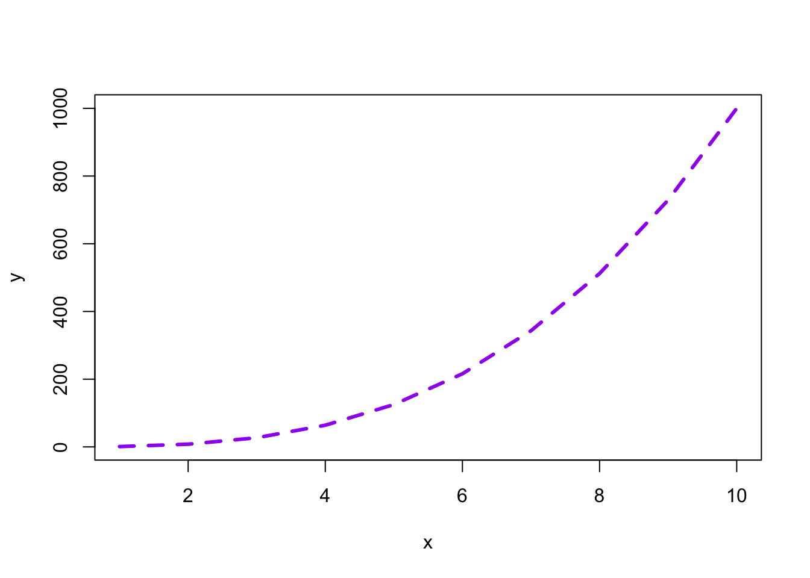
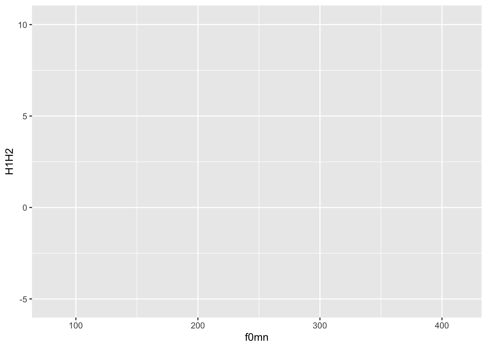
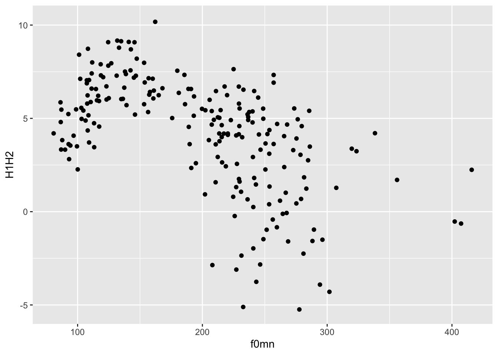
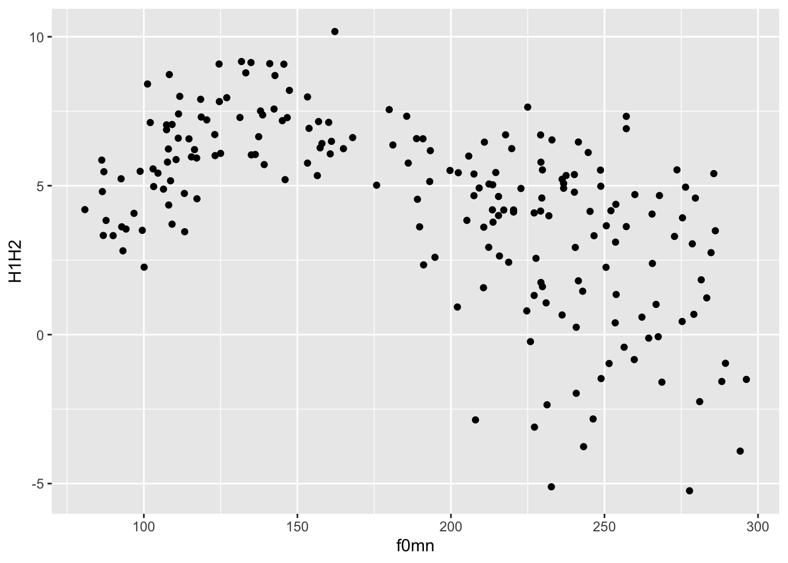

x <- 1:10
y <- x^3
plot(x, y)
Plotting data in R is easy once you understand the basics.
In R, you can create plots using different systems.
In this course you will learn how to use the ggplot2 system, but before we dive in, let’s have a look at the base R plotting system too.
Let’s create two vectors, x and y and plot them.
x <- 1:10
y <- x^3
plot(x, y)
Easy!
Now let’s add a few more things.
plot(x, y, type = "l", col = "purple", lwd = 3, lty = "dashed")
With plots as simple as this one, the base R plotting system is sufficient, but to create more complex plots (which is virtually always the case), base R gets incredibly complicated.
Instead we can use the tidyverse package ggplot2. ggplot2 works well with the other tidyverse packages and it follows the same principles, so it is convenient to use it for data visualisation instead of base R!
The tidyverse package ggplot2 provides users with a consistent set of functions to create captivating graphics.
We will first use the polite data to learn the basics of plotting using ggplot.
library(tidyverse)
polite <- read_csv("data/winter2012/polite.csv")In this tutorial we will use the following columns:
f0mn: mean f0 (fundamental frequency).
H1H2: difference between H2 and H1 (second and first harmonic). A higher H1-H2 difference indicates greater breathiness.
These are the minimum constituents of a ggplot2 plot.
You can specify the data and mapping with the data and mapping arguments of the ggplot() function.
Note that the mapping argument is always specified with aes(): mapping = aes(…).
In the following bare plot, we are just mapping f0mn to the x-axis and H1H2 to the y-axis, from the polite data frame.
Create a new code chunk, copy the following code and run it. From this point on I will assume you’ll create a new code chunk and run the code yourself, without explicit instructions.
ggplot(
data = polite,
mapping = aes(x = f0mn, y = H1H2)
)
Not much to see here: just two axes! So where’s the data? Don’t worry, we didn’t do anything wrong. Showing the data itself requires a further step, which we’ll turn to next.
Our code so far makes nice axes, but we are missing the most important part: showing the data!
Data is represented with geometries, or geoms for short. geoms are added to the base ggplot with functions whose names all start with geom_.
For this plot, you want to use geom_point(). This geom simply adds point to the plot based on the data in the polite data frame.
To add geoms to a plot, you write a + at the end of the ggplot() command and include the geom on the next line. For example:
ggplot(
data = polite,
mapping = aes(x = f0mn, y = H1H2)
) +
geom_point()
This type of plot, with two continuous axes and data represented by points, is called a scatter plot.
When writing your results section, you could describe the plot this way:
Figure 1 shows a scatter plot of mean f0 on the x-axis and H1-H2 difference on the y-axis. The plot suggest an overall negative relationship between mean f0 and H1-H2 difference. In other words, increasing mean f0 corresponds to decreasing breathiness.
Note that the data and mapping arguments don’t have to be named explicitly (with data = and mapping =) in the ggplot() function, since they are obligatory and they are specified in that order.
ggplot(
polite,
aes(x = f0mn, y = H1H2)
) +
geom_point()
In fact, you can also leave out x = and y =.
ggplot(
polite,
aes(f0mn, H1H2)
) +
geom_point()
Try running ?ggplot in the Console to see the arguments of the function and the order they appear in.
The code of the latest plot can also be written this way.
polite |>
ggplot(aes(f0mn, H1H2)) +
geom_point()Wait, what is that thing, |>?
It’s called a pipe. Think of a pipe as a teleporter.
The pipe |> teleports the data polite into the following function as the first argument. So polite |> ggplot() is equivalent to ggplot(polite).
For now it might not make much sense using the pipe, but you will learn next week how to chain many functions one after the other using the pipe, at which point its usefulness will be more obvious.
As a sneak peek, you will be able to filter the data before plotting it, like so:
polite |>
# include only rows where f0mn < 300
filter(f0mn < 300) |>
ggplot(aes(f0mn, H1H2)) +
geom_point()
colour aestheticYou might notice that there seems to be two subgroups within the data: one below about 200 Hz and one above about it.
In fact, these subgroups are related to gender. Let’s colour the points by gender then.
You can use the colour aesthetic to colour the points by gender, like so:
polite |>
ggplot(aes(f0mn, H1H2, colour = gender)) +
geom_point()Notice how colour = gender must be inside the aes() function, because we are trying to map colour to the values of the column gender. Colours are automatically assigned to each level in gender.
The default colour palette is used, but you can customise it. You will learn later in the course how to create custom palettes, but you can quickly change palette using one of the scale_colour_*() functions.
A useful function is the scale_colour_brewer() function. This function creates palettes based on ColorBrewer 2.0. There are three types of palettes (see the linked website for examples):
Sequential (seq): a gradient sequence of hues from lighter to darker.
Diverging (div): useful when you need a neutral middle colour and sequential colours on either side of the neutral colour.
Qualitative (qual): useful for categorical variables.
Let’s use the default qualitative palette.
polite |>
ggplot(aes(f0mn, H1H2, colour = gender)) +
geom_point() +
scale_color_brewer(type = "qual")Now try changing the palette argument of the scale_colour_brewer() function to different palettes. (Check the function documentation for a list).
Another set of palettes is provided by scale_colour_viridis_d() (the d stands for “discrete” palette, to be used for categorical variables). Here’s an example.
polite |>
ggplot(aes(f0mn, H1H2, colour = gender)) +
geom_point() +
scale_color_viridis_d(option = "B")alpha aestheticAnother useful ggplot2 aesthetic is alpha. This aesthetic sets the transparency of the geometry: 0 means completely transparent and 1 means completely opaque.
Change alpha in the code below to 0.5.
polite |>
ggplot(aes(f0mn, H1H2, colour = gender)) +
geom_point(alpha = ...) +
scale_color_brewer(type = "qual")When you are setting a value yourself that should apply to all instances of some geometry, rather than mapping an aesthetic to values in a specific column (like we did above with colour), you should add the aesthetic outside of aes() and usually in the geom function you want to modify.
Setting a lower alpha is useful when there are a lot of points or other geometries that overlap with each other and it just looks like a blob of colour (you can’t really see the individual geometries; you will see an example next week). It is not the case here, and in fact reducing the alpha makes the plot quite illegible!
If you want to change the labels of the axes and the legend, you can use the labs() function, like this.
polite |>
ggplot(aes(f0mn, H1H2, colour = gender)) +
geom_point() +
labs(
x = "Mean f0 (Hz)",
y = "H1-H2 difference (dB)",
colour = "Gender"
)Also add a title and a subtitle (use these two arguments within the labs() function).
That’s all for this week!